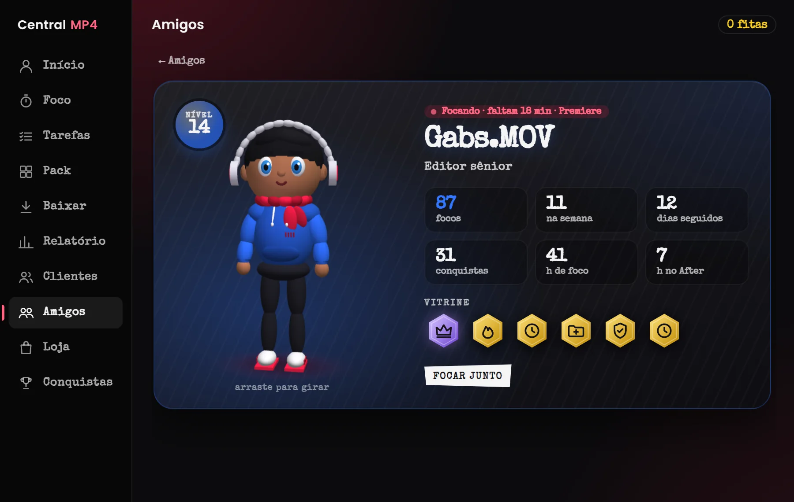
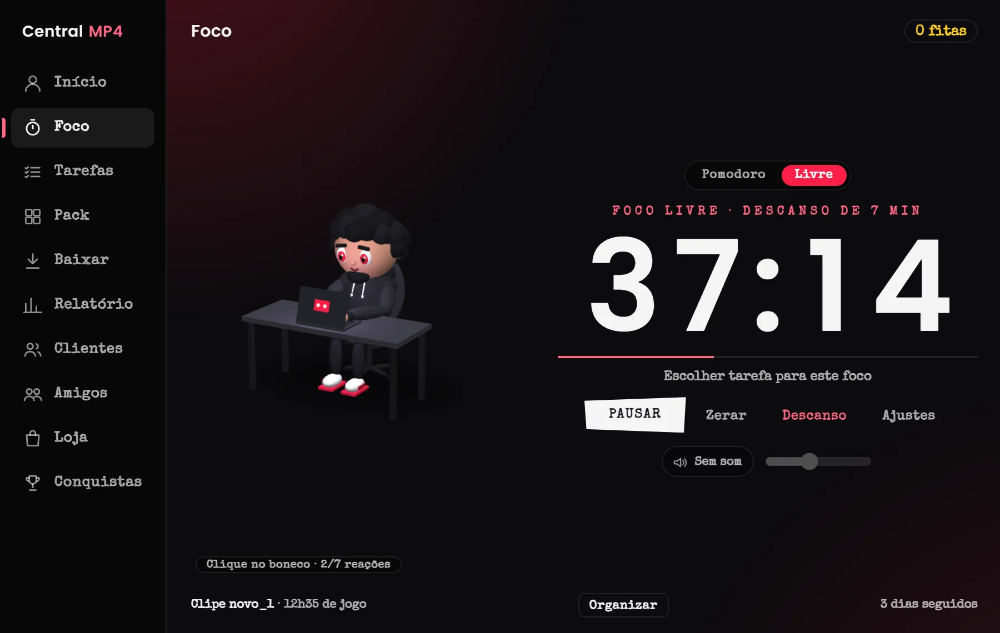
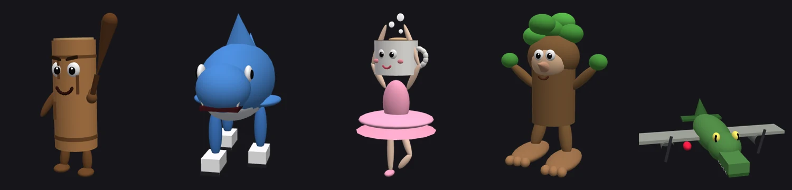

Novo jogo em .aep
Cria o projeto na pasta AFTER do cliente, com a composição no formato escolhido.
Plugin gratuito para Premiere Pro e After Effects
Um menu de abertura para começar e continuar projetos, pastas de cliente criadas sozinhas, um painel com pomodoro e foco livre, tarefas, biblioteca de efeitos, downloader e relatório de horas. Amigos para focar junto. E um boneco que edita junto com você, no Premiere e no After.

Menu de abertura
A intro da MP4 Studio toca, o menu entra por cima da tela inicial e você escolhe: projeto novo, continuar de onde parou, ver seus clientes ou mexer nas opções. Teclado ou mouse. No After Effects também, com os seus .aep.

Novo jogo
Escolhe o cliente, escreve o nome do projeto e a Central monta a pasta inteira no lugar certo, salva o projeto dentro dela e já abre com a sequência no formato que você precisa.


After Effects
O menu abre junto com o After e o painel fica em Janela › Extensões › Central MP4. Fitas, tarefas, conquistas e o pomodoro são os mesmos: começou o foco no Premiere, ele continua no After.
Cria o projeto na pasta AFTER do cliente, com a composição no formato escolhido.
Os dois painéis mostram o mesmo foco, as mesmas fitas e as mesmas missões. As horas não contam em dobro.
10 conquistas só do After, que liberam itens exclusivos, e bônus de combo quando o projeto passa pelos dois no mesmo dia.
Amigos
Mande o seu código de amigo e veja quem está focando ou editando agora. Cada amigo tem um card com o boneco de corpo inteiro, girando, com o nível, os números e a vitrine de medalhas mais raras.


Foco livre
Nem todo corte cabe em 25 minutos. No modo Livre o relógio conta para cima e, quando você cansar, aperta Descanso: a pausa sai proporcional ao que você trabalhou.
Brainrots
Tung Tung Tung Sahur, Tralalero Tralala, Ballerina Cappuccina, Brr Brr Patapim e Bombardiro Crocodilo, em 3D na Loja. Equipado, ele reage ao foco começando, à metade, aos 5 minutos finais, às conquistas e aos exports, e aparece no menu.

O painel
O painel Central MP4 fica encaixado no Premiere (ou no After), ao lado do seu projeto.

Nos detalhes
Quando sai versão nova, o painel avisa. Um clique baixa, confere e instala.
O mesmo plugin nos dois sistemas, com instalador próprio para cada um.
Instala só na sua pasta de usuário. Seus dados ficam no seu computador.
O foco pausa sozinho se ninguém mexe no mouse nem na timeline, e volta quando você volta.
Pastas e miniaturas ficam guardadas: a segunda vez abre na hora, mesmo no Google Drive.
Bronze, prata, ouro e platina. Missões do dia, desafios da semana e itens exclusivos.
Novidades
Card de perfil dos amigos com o boneco de corpo inteiro, em pé e girando, com nível, números e vitrine de medalhas. Foco livre: trabalhe o quanto quiser e o descanso sai proporcional (1 min a cada 5). Correções: o menu não abre mais sozinho quando o Premiere abre o After escondido para o Dynamic Link, abre mais rápido e a música ficou mais baixa.
Os brainrots falam no foco e aparecem no menu. Focar junto com os amigos, aviso quando um amigo começa a focar, você × amigo e busca na lista. Ficha do projeto com os clientes cadastrados.
Amigos: código de amigo, pedidos, quem está focando agora, conquistas de cada um e um feed com o que a turma desbloqueia.
After Effects! Menu e painel no After, sincronizados com o Premiere em tempo real. 5 brainrots como pets 3D, 10 conquistas exclusivas do After e bônus de combo.
Aba Clientes no painel, conquistas repaginadas por raridade e desbloqueio com animação.
Relatório novo (mapa de calor, gráficos, meta da semana e clientes com foto), Pack bem mais rápido (lembra as pastas e as miniaturas) e giro do boneco mais liso. Menu com a cara nova da Central MP4 (logo, emojis e a tela Clientes), intro da MP4 Studio sempre antes do menu. Novo jogo com clientes que já cria a pasta do projeto com toda a estrutura. Também: desafios da semana com itens exclusivos, salas novas para o boneco, reações ao clicar nele, forma de onda nos sons do Pack e etiquetas próprias.
Versão para Mac, loja com provador, baú do dia, cartão de perfil, conquistas, relatório de horas, missões do dia, som ambiente, fila no downloader e atualização automática.
Instalar
O instalador não pede senha de administrador. Ele copia o plugin para a sua pasta de usuário e libera o Premiere para carregar extensões de fora da loja da Adobe.
Dúvidas
Sim. As "fitas" da loja são ganhas usando o plugin (focos, tarefas, missões, baú do dia e conquistas). Não tem compra de verdade.
Premiere Pro 2021 ou mais novo, no Windows 10 e 11 e no macOS 11 ou mais novo.
Sim, After Effects 2021 ou mais novo. O mesmo instalador coloca nos dois, e o painel do After fica sincronizado com o do Premiere.
Não. Os amigos só ficam ligados quando você ativa, e só vai o seu nome, o boneco, o nível, as conquistas, as horas de foco e se você está focando agora. Projetos, clientes, pastas e nomes de arquivo nunca saem do seu computador.
Feche o Premiere (e o After), rode o instalador de novo (ele refaz a liberação de extensões) e abra o Premiere outra vez.
A aba Pack navega pela pasta do Essential Pack no seu computador: overlays, sons, músicas, memes e modelos, com busca, prévia e arrastar para a timeline. Os arquivos do pack não vêm no plugin.
No seu computador. No Windows em %APPDATA%\renanmp4-menu, no Mac em ~/Library/Application Support/renanmp4-menu. Atualizar não apaga nada.
No Windows, abra o instalador e clique em REMOVER. No Mac, rode o Desinstalar Central MP4 que vem no .zip.
Grátis, para Windows e Mac. Instala em um minuto e atualiza sozinho.